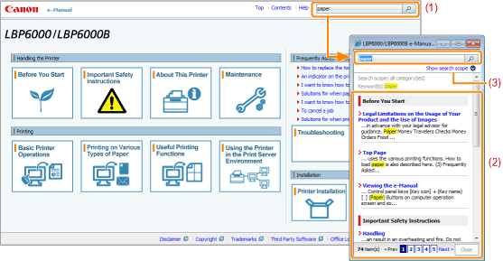

|
(1)
|
[Enter keyword(s) here]
Enter a keyword in the entry field which is located on the upper right of the "Top page" or "Topic page", and then click [
You can also search by entering a keyword in the displayed dialog box.
Also, the AND search is available in the e-Manual so you can refine the search results by entering two or more keywords. When entering keywords, enter a space between the keywords.
Example: "Toner Replacement" (if you want to display pages which include words, "Toner" and "Replacement")
|
|
(2)
|
Search result
The search results for a keyword are displayed.
If the search results are more than 10 results, you can see the other results by clicking [<< Prev], [Next >>], or the number which is located below the result.
|
|
(3)
|
[Show search scope]
If you want to specify a search scope, click here, and then select the check box for the category which you want to search.
|